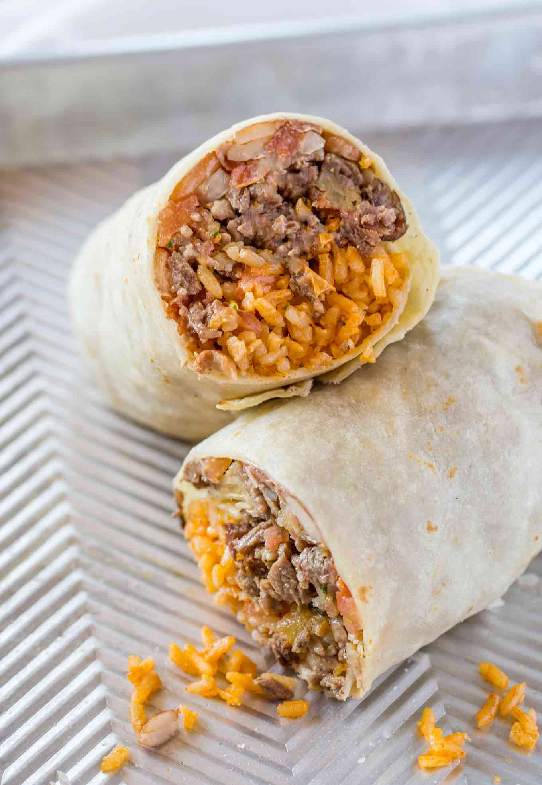

Beef Burrito

Description
This juicy classic beef burrito is the perfect dinner to make tonight.
Ingredients
- 1 pound ground beef
- 1/2 cup chopped onion
- 3 cloves minced garlic
- 3 tablespoons tomate paste
- 1 tablespoon dried oregano
- 2 table spoons fresh lime juice
- 1/4 cup of water
- 2 cups prepared mexican rice
- 1 15 oz. can refried beans
- 2 cups shredded cheddar cheese
- 8 tablespoons sour cream
- 8 large flour tortillas
Steps
- In a large skillet, over medium-high heat, add ground beef, onion and garlic to skillet. Cook and crumble beef and cook until no longer pink. Drain grease.
- Add tomato paste, cumin, chili powder, oregano, salt, lime juice and water to beef. Cook and stir until mixture comes to a slight boil. Reduce heat to low and cook for 5 to 8 minutes or until thoroughly heated.
- Remove from heat and let stand 15 minutes or until mixture comes to warm room temperature.
- Lay tortillas out on a flat surface and divide the beans, cheese, beef,rice and sour cream among the 8 tortillas. Fold each burrito-style.
- Serve and enjoy!